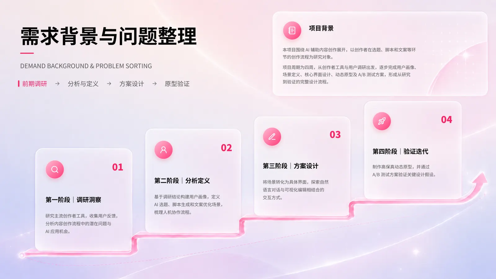
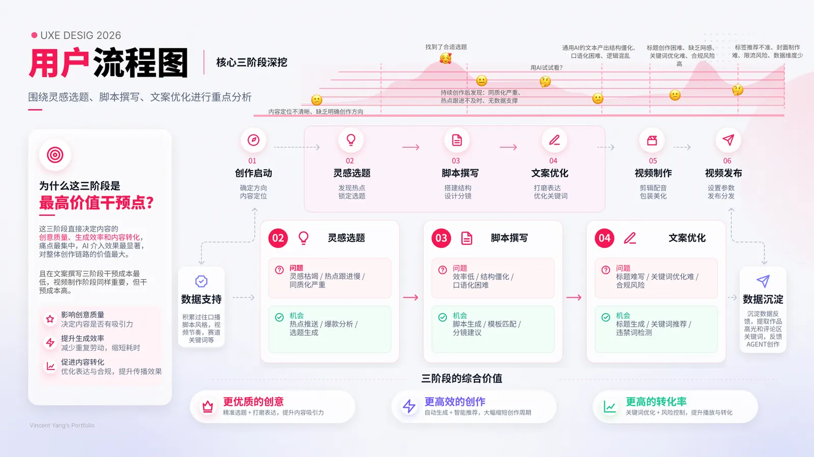
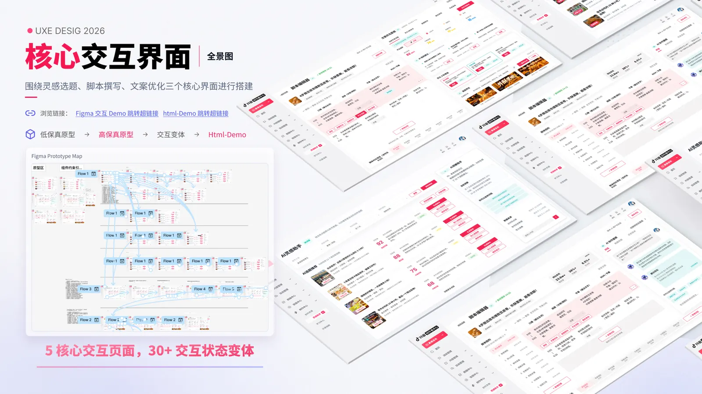
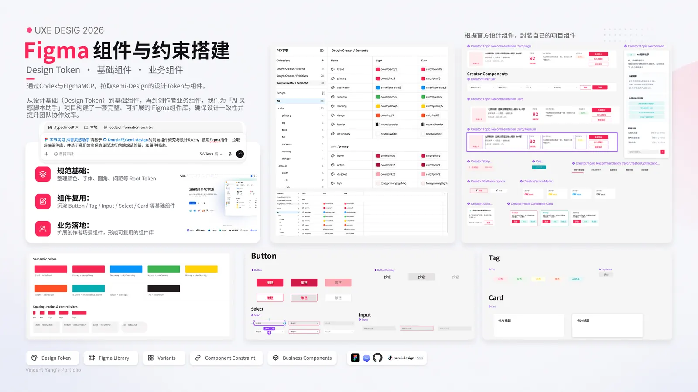
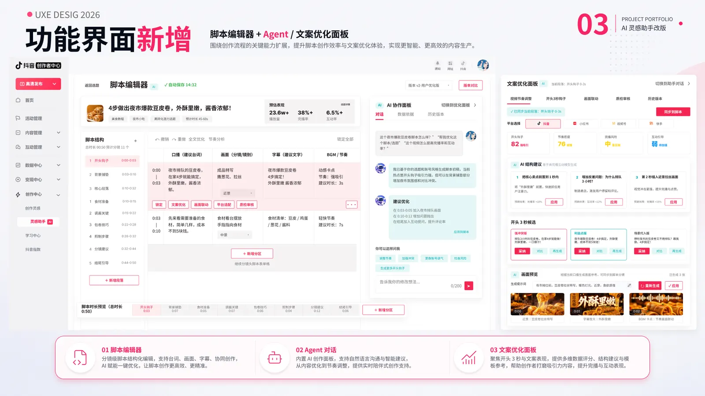

← 返回所有作品
抖音创作者中心
Case study 01 / AI creation tool
抖音创作者中心
AI 灵感助手
将选题灵感、脚本结构和文案打磨整合成一条可探索、可编辑的创作链路。
- 角色
- 用户体验设计师
- 时间
- 2026.04—2026.05
- 范围
- 研究 · 流程 · 原型 · 交付

项目概览
在字节跳动智能创作研发部实习期间，我参与抖音创作者中心 AI 灵感助手的体验设计。项目面向需要持续产出内容的创作者，聚焦选题、脚本和文案环节中的信息收集与反复修改。
我的工作覆盖竞品分析、用户痛点梳理、MVP 场景流程、高保真界面和交互原型，并参与组件规范、设计评审及研发交付。
01 / INSIGHT识别选题、脚本和文案之间的断点
02 / FLOW将对话式生成接入结构化编辑
03 / VALIDATION用动态原型验证关键交互状态
从痛点到设计策略
创作者需要在选题参考、竞品内容、脚本草稿和发布文案之间来回切换。设计目标是减少信息搬运，让 AI 建议可以直接进入创作界面，同时保留人的判断和修改空间。


交互方案与落地
方案把自然语言输入、推荐信息与可视化编辑放在同一工作流中。我使用 Figma 和 HTML 制作动态原型，模拟 AI 对话、内容推荐、分镜编辑与生成状态，帮助团队讨论功能边界和交互逻辑。



产出与反思
最终形成 3 个核心页面、40+ 交互变体和可演示的 HTML 原型。方案在设计评审后向产品与研发团队演示并交付。这个项目让我更关注生成式 AI 的建议如何与可控的编辑工具配合，而不是让生成结果成为流程终点。